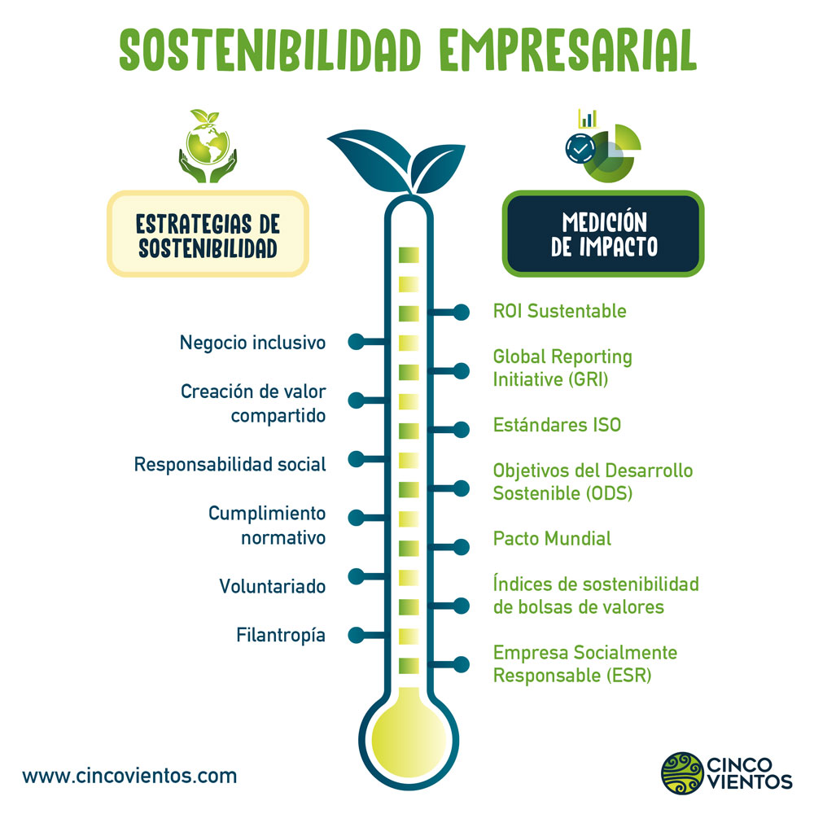

Consejos para Empresas
Las empresas tienen un papel fundamental en la sostenibilidad. Aquí te presentamos algunas acciones clave:
1. Introducción al concepto de ASG (Ambiental, Social y Gobernanza)
El concepto de ASG engloba las prácticas que las empresas deben seguir para ser responsables con el medio ambiente, la sociedad y su gobernanza interna.
2. Diseño y Producción Sostenibles
- Economía Circular: Reutilizar materiales y productos para reducir el impacto ambiental.
- Ecodiseño: Crear productos considerando su ciclo de vida y su impacto ecológico.
- Reciclaje: Promover el reciclaje de materiales y reducir los desechos industriales.
3. Certificaciones Sostenibles
Obtener certificaciones como ISO 14001, EMAS o Fair Trade demuestra el compromiso de una empresa con la sostenibilidad.

Consejos para Ciudadanos
Los ciudadanos también juegan un papel clave en la sostenibilidad. Aquí te dejamos algunas ideas:
1. Objetivos de Desarrollo Sostenible (ODS)
Los ODS son una serie de metas globales para mejorar el bienestar de la humanidad y el planeta. Los ciudadanos pueden contribuir a estos objetivos de muchas formas:
- Ahorro de agua: Utilizar el agua de manera responsable.
- Separación de residuos: Reciclar y separar correctamente los desechos.
- Consumir productos locales: Apoyar el consumo de productos frescos y cercanos para reducir la huella de carbono.
2. Reducir la Huella de Carbono Individual
Pequeños cambios en nuestro estilo de vida pueden hacer una gran diferencia en la reducción de la huella de carbono:
- Uso del transporte público: Reducir la dependencia del coche.
- Reducción de plásticos: Usar materiales reutilizables y reducir el uso de plásticos de un solo uso.
- Compostaje: Compostar residuos orgánicos para reducir los desechos en vertederos.
3. Programas del Ayuntamiento
El Ayuntamiento ofrece diversas ayudas y programas para fomentar la sostenibilidad en la ciudad:
- Subvenciones: Ayudas para empresas y ciudadanos que adopten prácticas sostenibles.
- Puntos de Recogida: Ubicaciones específicas para depositar residuos reciclables o peligrosos.
- Talleres: Actividades y eventos educativos sobre sostenibilidad.